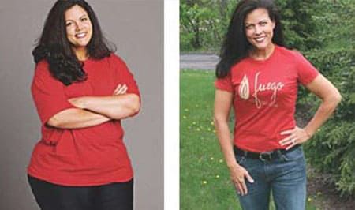
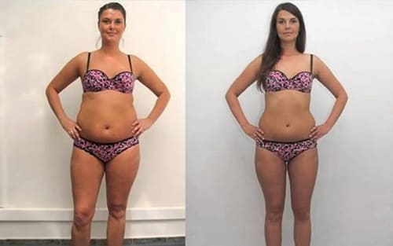

حقيقة كاملة ديال خسارتي للوزن!
منيلا- يونيو 03 إيرا مورالز مريم السعيد
 سلام، أعزائي القراء! كلشي لاحظ بلي خسرت بزاف ديال لوزن، و كلشي كيسولني كيفاش قديت نديرها. كترت ميسجات ديجا زعجاني. داكشي علاش غدي نعاود لكم قصتي هنا، نرفقها مع شي تصاور.
سلام، أعزائي القراء! كلشي لاحظ بلي خسرت بزاف ديال لوزن، و كلشي كيسولني كيفاش قديت نديرها. كترت ميسجات ديجا زعجاني. داكشي علاش غدي نعاود لكم قصتي هنا، نرفقها مع شي تصاور.
ديما كنت باغا نخسر لوزن ولكن حتى شي حاجة مغدي تعاوني. جربت بزاف ديال لحوايج! حمية اللبن الرائب ، حمية الكيتو ، حمية منخفضة السعرات الحرارية ، حمية منخفضة الكربوهيدرات ، حمية بروتينية - ولكن حتا حاجة معونات، بحال كاع لكينات، رشاشات و المسكة لي جربتها. بالإضافة، لأن كل هاد حميات غذائية كان عندها تأثير سلبي على صحتي كاملة و لمزاج ديالي. كنت ديما جيعانة.كنت ديما غضبانة و منفاعلة. كانت شي حاجة لي غير مقبولة، حتى قراء دياولي غدي يلاحظوها فالمقلات دياولي!
كيفاش طرا كلشي
تعتقت من طرف أعز صديقة لوسي. الي ولات أم مؤخرا، فأواخر لحمل، زادت 30كغ وولات كتبان بحال شي نفاخة. ولكن قدات تخلص من وزن زايد فشهرين – فعلا مدة قصيرة! كنا سحابنا بلي دارت عملية ديال تجميل ولكن صدق سهل من هاكة بزاف.
لوسي شرات جوج علب ديال مكمل غذائي سميتو «». «هكي، جربي هدا. هدا منتج مميز لخسارة الوزن لي كيعاون بصح. شفيني غير أنا.»، - وراتني طريق لسعادة بكل بساطة وسهولة. ديك ساعة شديت لقرعات أوبديت كنفحصهوم

تعليمات استعمال كانوا بساط بزاف – بكل بساطة شربي كينة وحدة ، 30 دقيقة قبل نعاس كل ليلة! طبيعية تماما، هدي حاجة مزيانة لحقاش مكنستعملش حتى شي منتجات كيماوية.
بديت كناخذو: كل ليلة.
حسيت بلي كنخسر لوزن. تقدر تشوف هدشي من حوايجي – مبقاوش مضيقين عليا، و ولات عندي طاقة كتر.
قررت باش نبقا نسجل لوزن ديالي كل شهر. ولكن مقديتش نصبرر هاد المدة كاملة. شفت لوزن ديال من مورا 2 سيمانات. طلعت فوق ميزان وحبسات لي النفس. خسرت 11 كغ!!!
ولكن هدي كانت غير لبداية!
الجسم ديالي كان كيتخلص من لوزن لمفرط بحذر فلول. ولكن منين عرفت شحال ساهلة، قررت نستافد منها مزيان. شهر لي من بعد بقيت كناكل نفس شوربا، عصيدة، ولخبز مع زبدة بحال لول، ولكن أهم حاجة، كناخذ جرعات منتظمة ديال . حققت رقم جديد فخسارة لوزن:85كغ!
وليت كنصغار قدام عنيا! كانت ملهمة و ممتعة كتر. فسيمانة تالتة، خسرت 4 كغ خرى!
دبا مكنتسوقش كيفاش كياخذوا تصاوري لحقاش كنبان زوينة من كاع جوايه – رجعت تصالح مع لجسم ديالي لنسيتو مدة طويلة هدي، كنخدم بكفاءة، و عندي بزاف ديال لأفكار ابداعية حاليا.
بشكل عام، خسرت 23 كغ فشهر واحد! رائعة بكل بساطة! وخا مبدلتش نمط حياتي.
فالفلبين، كاين غير واحد الموزع الرسمي لمنتج خسارة الوزن . بكل بساطة طلب من الموقع الرسمي، غدي يجيك حتا لدارك، غدي تخلص حتا توصلك العلبة. بهاد البساطة!
حاول تخسر لوزن، بدا دبا نيت – حياتك غدي تبدل لأحسن!
 خالد المصري – دكتورة فطب، خبيرة تغذية، عضوة فجمعية أخصائيو تغذية – الحمية
خالد المصري – دكتورة فطب، خبيرة تغذية، عضوة فجمعية أخصائيو تغذية – الحمية
" كخبيرة بأكثر من 10 سنين ديال لخدمة، بغيت نأكد لك. ناس لكيستعموا طرق مشهورة لخسارة لوزن، بحال الأنظمة الغذائية منخفضة السعرات الحرارية أو الأنظمة الغذائية أحادية الكربوهيدرات ، كيعييو ريسهوم لمراحل ولي مبقاتش مقبولة – كل هدشي كيأثر على صحتك سلبيا! كنتفق بلي كتوصل لنتائج خسارة لوزن مؤقتة، ولكن مباشرة غدي توصل لتمثيل غذائي تقيل و كسول.
إلى بغيتي تخسر وزن كتر فالمستقبل بلى متخدم على راسك، غدي تحتاج تمثيل غذائي سريع بزاف.
كيحتوي على مكونات طبيعية لي كتسرع عملية التمثيل الغذائي 5- حتى ل 7- ديال المرات. بهاد الطريقة، لجسم بسرعة غدي يحرق دهون وماغاديش يكون مخزون ديال دهون جديدة. حاليا، كنعتبر أنه طريقة صحية لوحيدة لخسارة لوزن.
.
فالجمعية ديال أخصائيين التغذية- الحمية، درنا مراقبة لتأثيرات ديال .
ف 45 يوم دراسة على 17 متطوع بوزن زايد كتر من 10 كغ حققوا النتائج التاليةة:
1. مجموعة متطوعون سجلوا خسارة للوزن كبيرة: 7 حتى 29 كغ
2. تحسن ديال صحة و لياقة لبدنية تسجلات ف 97% من المتطوعين .
3. تطور مهم فأداء الكبد و البنكرياس.
4. تحسن عملية التمثيل الغذائي في الجسم.
نتائج ايجابيه مضمونة بغض النظر على العمر، الحالة الصحية و الجنس. كنوصيو بلاستعمال ديال هاد مكمل الغذائي كحارق ديال دهون طبيعي.
كناخدو لمدة عماين. عاوني نخسر 14 كغ. دبا كناخدو باش نحافظ على نتائج و غني بالفيتامينات و المغذيات
كنخد مدة هدي. كان عندي وزن زائد، ولكن كلو مشا دبا، نقدرناكل كلشي، ولا بديت نزيد الوزن، غدي ناخدو واحد المدة أو نرجع لفورما.
سلام، أنا عندي 30عام وكنحاول نخسر الوزن. عارفا بلي لعمر كيصعبها، ولكن أنا راسي قاسح. قررت نجرب وطلبت الحصة ديال . فظرف أسابيع قليلة طلبت وحديين اخرين لحقاش حصلت على نتائج مثيرة للإعجاب! خسرت 6 كيلو!!فنفس الوقت، حاولت نحافظ على رجيم مناسب و رياضة، و لكن هاد نتائج مع ذلك مفاجئة و مزيانة بزاف. شكرا على المقالة. كنوصي بزاف ب .
إحساس زوين ملي كتبغي شي حاجة بزاف، ولكن مستحيل تحققها. ولكن فاش كتحصل عليها أو كتبان معجزة. خسرت 30 كيلو التزامنا بنفس روتين. أصدقائي متفاجئين، كيسحبلهوم بلي أنا دايرة حمية صارمة، وخايفيين علية. مقولت ليهم والو، خليتهوم يخمنوا)))))
أنا فرحانة بزاف أنني لقيت هاد المقالة. كنت غدي نخلي محاولة انني نحصل على جسم رقيق. بديت كناخد سيمانة هدي. ستة كغ مشاو. مزال عندي نفس طريقة العيش، كنكل نفس لماكلة ديال قبل، وخا قللت الكمية. شهيتي لكبيرة مشات، مبقيت كنبغي نأكل شي حاجة لوقت كامل. معرفتش شكون لي صايب هاد تركيبة رائعة ولكن شكرا!
أنا فرحانة بزاف أنني لقيت هاد المقالة. كنت غدي نترك محاولة نحصل على جسم رقيق. بديت كناخد سيمانة هدي. ست كغ مشاو. مزال عندي نفس طريقة العيش، كنكل نفس لماكلة كيقبل، وخا قللت الكمية. شهيتي لكبيرة مشات، مبقيتك نبغي ناكل شي حاجة لوقت كامل. معرفتش شكون لي صايب هاد تركيبة رائعة ولكن شكرا!
كنت ديما كنحلم براسي زوينة، فالمدة ديال ثلاثة شهور لي كنت كنقرا فيها على . فواحد لوقت كنت بغا ندير طلب ولكن أم ديالي قنعاتني. ثمن باش نحقق لحلم ديالي كتر من دكشي لي نقدر نوفروه! دبا حنا كنخسروا لوزن بجوج. هي محققا نتائج حسن من. ☹
لبنات، نقولكم، جربت هاد المنتج، ويلا استعملتيه صحيح، كيعطي نتائج رائعة. ولكن متستخدموهش كتر من لقياس. هدي أنا حاليا!
سلام! حتى أنا كنت كنستعمل . هدي شهرين دبا خسرت 8كغ. أحسن حاجة أن كيلووات مكيرجعوش. بتوفيق.
غدا عندي موعد مع صديقي، غدي نتعشاو فشي رستورا فاخرة. شي سيمانات هدي، غير لفكرة ديال أنني غادة لشي بلاصة عامة باش ناكل بلا منرد لبال لسعرات الحرارية، كان كابوس. ولكن دبا مكنتسوقش! عارفا بلي نقدر ناكل أي حاجة أو مغديش نغلاض. خسرت 17.5 كغ غي فشهر مع المكمل !
خسرت 18 كغ ف 6 سمنات! واعر!!! شكرا جوليلن على المعلومات على هد المنتج الحاجة لي خاص كلشي يجربها!!!
سلام. جربت . ولكن فشهر لي فات خسرت غير 12كغ))))
ولات منقد ديال حياتي. سنين هدي، درت كسيدة بطنوبيل ومقديتش نتحرك لمدة8 تشهورة. بقيت فلفراش أو زت 32 كغ! شوي بشويا وليت كنتمشا بعكاكز، ولكن كان مستحيل نبدا ندير رياضة، كنت مزال ضعيفة، والوزن زايد خلا الوضعية تزيد تكفس. جربت . تغييرات لولا بدات كاتبان فسيمانة. مغديش نقول بلي فقدان الوزن كان باين بزاف، ولكن بديت كنحس بلي الجسم ديالي ولى كيخدم أسرع، كيهضم الماكلة دغيا إلخ. أنا فرحانة وممتنة لصاحبي لكتشف .